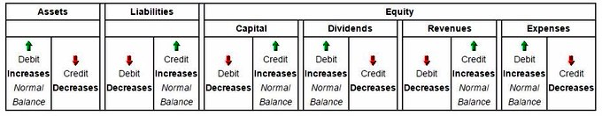
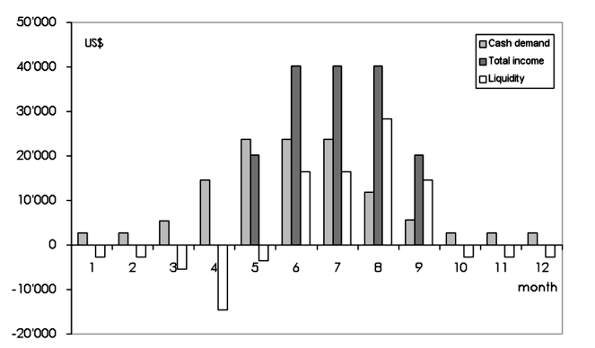
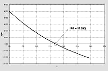
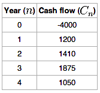
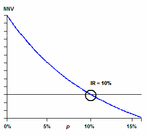
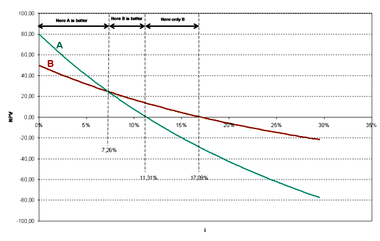
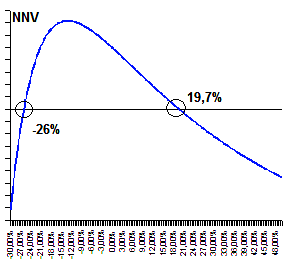
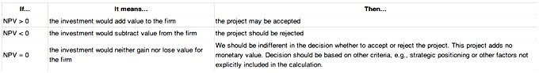
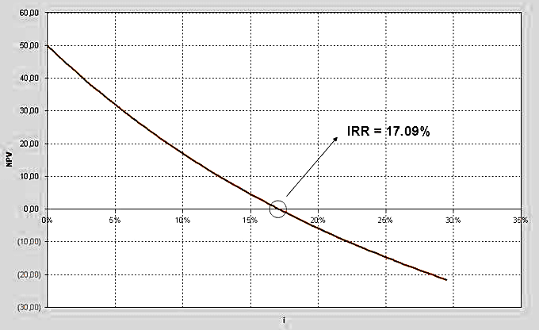

Capital budgeting is the planning process used to determine which of an organization's long term investments are worth pursuing.
Differentiate between the different capital budget methods
Capital budgeting, which is also called "investment appraisal," is the planning process used to determine which of an organization's long term investments such as new machinery, replacement machinery, new plants, new products, and research development projects are worth pursuing. It is to budget for major capital investments or expenditures.
Many formal methods are used in capital budgeting, including the techniques as followed:
Net Present Value
Net present value (NPV) is used to estimate each potential project's value by using a discounted cash flow (DCF) valuation. This valuation requires estimating the size and timing of all the incremental cash flows from the project. The NPV is greatly affected by the discount rate, so selecting the proper rate–sometimes called the hurdle rate–is critical to making the right decision.
This should reflect the riskiness of the investment, typically measured by the volatility of cash flows, and must take into account the financing mix. Managers may use models, such as the CAPM or the APT, to estimate a discount rate appropriate for each particular project, and use the weighted average cost of capital(WACC) to reflect the financing mix selected. A common practice in choosing a discount rate for a project is to apply a WACC that applies to the entire firm, but a higher discount rate may be more appropriate when a project's risk is higher than the risk of the firm as a whole.
Internal Rate of Return
The internal rate of return (IRR) is defined as the discount rate that gives a net present value (NPV) of zero. It is a commonly used measure of investment efficiency.
The IRR method will result in the same decision as the NPV method for non-mutually exclusive projects in an unconstrained environment, in the usual cases where a negative cash flow occurs at the start of the project, followed by all positive cash flows. Nevertheless, for mutually exclusive projects, the decision rule of taking the project with the highest IRR, which is often used, may select a project with a lower NPV.
One shortcoming of the IRR method is that it is commonly misunderstood to convey the actual annual profitability of an investment. Accordingly, a measure called "Modified Internal Rate of Return (MIRR)" is often used.
Payback Period
Payback period in capital budgeting refers to the period of time required for the return on an investment to "repay" the sum of the original investment. Payback period intuitively measures how long something takes to "pay for itself. " All else being equal, shorter payback periods are preferable to longer payback periods.
The payback period is considered a method of analysis with serious limitations and qualifications for its use, because it does not account for the time value of money, risk, financing, or other important considerations, such as the opportunity cost.
Profitability Index
Profitability index (PI), also known as profit investment ratio (PIR) and value investment ratio (VIR), is the ratio of payoff to investment of a proposed project. It is a useful tool for ranking projects, because it allows you to quantify the amount of value created per unit of investment.
Equivalent Annuity
The equivalent annuity method expresses the NPV as an annualized cash flow by dividing it by the present value of the annuity factor. It is often used when comparing investment projects of unequal lifespans. For example, if project A has an expected lifetime of seven years, and project B has an expected lifetime of 11 years, it would be improper to simply compare the net present values (NPVs) of the two projects, unless the projects could not be repeated.
Real Options Analysis
The discounted cash flow methods essentially value projects as if they were risky bonds, with the promised cash flows known. But managers will have many choices of how to increase future cash inflows or to decrease future cash outflows. In other words, managers get to manage the projects, not simply accept or reject them. Real options analysis try to value the choices–the option value–that the managers will have in the future and adds these values to the NPV.
These methods use the incremental cash flows from each potential investment or project. Techniques based on accounting earnings and accounting rules are sometimes used. Simplified and hybrid methods are used as well, such as payback period and discounted payback period.
The main goals of capital budgeting are not only to control resources and provide visibility, but also to rank projects and raise funds.
Describe the goals of the capital budgeting process
The purpose of budgeting is to provide a forecast of revenues and expenditures. That is, to construct a model of how a business might perform financially if certain strategies, events, and plans are carried out. It enables the actual financial operation of the business to be measured against the forecast, and it establishes the cost constraint for a project, program, or operation.
Budgeting helps to aid the planning of actual operations by forcing managers to consider how the conditions might change, and what steps should be taken in such an event. It encourages managers to consider problems before they arise. It also helps co-ordinate the activities of the organization by compelling managers to examine relationships between their own operation and those of other departments.
Other essential functions of a budget include:
Capital Budgeting, as a part of budgeting, more specifically focuses on long-term investment, major capital and capital expenditures. The main goals of capital budgeting involve:
The real value of capital budgeting is to rank projects. Most organizations have many projects that could potentially be financially rewarding. Once it has been determined that a particular project has exceeded its hurdle, then it should be ranked against peer projects (e.g. - highest Profitability index to lowest Profitability index). The highest ranking projects should be implemented until the budgeted capital has been expended.
When a corporation determines its capital budget, it must acquire funds. Three methods are generally available to publicly-traded corporations: corporate bonds, preferred stock, and common stock. The ideal mix of those funding sources is determined by the financial managers of the firm and is related to the amount of financial risk that the corporation is willing to undertake.
Corporate bonds entail the lowest financial risk and, therefore, generally have the lowest interest rate. Preferred stock have no financial risk but dividends, including all in arrears, must be paid to the preferred stockholders before any cash disbursements can be made to common stockholders; they generally have interest rates higher than those of corporate bonds. Finally, common stocks entail no financial risk but are the most expensive way to finance capital projects.The Internal Rate of Return is very important.
Capital budgeting is an important task as large sums of money are involved, which influences the profitability of the firm. Plus, a long-term investment, once made, cannot be reversed without significant loss of invested capital. The implication of long-term investment decisions are more extensive than those of short-run decisions because of the time factor involved; capital budgeting decisions are subject to a higher degree of risk and uncertainty than are short-run decisions.
The main goal of capital budgeting is to rank projects.
Capital budgeting requires a thorough understanding of cash flow and accounting principles, particularly as they pertain to valuing processes and investments.
Identify the various sources of cash flow within an organization
Accounting is the processes used to identify and transpose business transactions into permanent legal records of a business's operations and capital flows. The International Accounting Standards (IAS) and the Generally Accepted Accounting Principles (GAAP) are legislative descriptions of expectations and norms within the accounting field.
When it comes to the capital flows in accounting, it is easiest to visualize it based on each type of item:
This chart is a useful way to see the trajectory of accounting flows as they apply to different types of line items.
Understanding how to report each type of asset, and the impacts these asset changes have on income statements, balance sheets, and cash flow statements, is important in accurately depicting accounting flows.
A cash flow is one element of accounting flows, and particularly important to understanding capital budgeting. A cash flow describes the transmission of payments and returns internally and/or externally as a byproduct of operations over time. Conducting cash flow analyses on current or potential projects and investments is a critical aspect of capital budgeting, and determines the profitability, cost of capital, and/or expected rate of return on a given project, organizational operation or investment.
Cash flow analyses can reveal the rate of return, or value of suggested project, through deriving the internal rate of return (IRR) and the net present value (NPV). They also indicate overall liquidity, or a business's capacity to capture existing opportunities through freeing of capital for future investments. Cash flows will also underline overall profitability including, but not limited to, net income.
Cash flows consolidate inputs from the following activities:
Several methods are commonly used to rank investment proposals, including NPV, IRR, PI, payback period, and ARR.
Analyze investment proposals by ranking them using different methods
The most valuable aim of capital budgeting is to rank investment proposals. To choose the most valuable investment option, several methods are commonly used:
NPV can be described as the "difference amount" between the sums of discounted: cash inflows and cash outflows. In the case when all future cash flows are incoming, and the only outflow of cash is the purchase price, the NPV is simply the PV of future cash flows minus the purchase price (which is its own PV). The higher the NPV, the more attractive the investment proposal. NPV is a central tool in discounted cash flow (DCF) analysis and is a standard method for using the time value of money to appraise long-term projects. Used for capital budgeting and widely used throughout economics, finance, and accounting, it measures the excess or shortfall of cash flows, in present value terms, once financing charges are met.
Each cash inflow/outflow is discounted back to its present value (PV). Then they are summed. Therefore, NPV is the sum of all terms.
In financial theory, if there is a choice between two mutually exclusive alternatives, the one yielding the higher NPV should be selected. The rules of decision making are:
An NPV calculated using variable discount rates (if they are known for the duration of the investment) better reflects the situation than one calculated from a constant discount rate for the entire investment duration.
The internal rate of return on an investment or project is the "annualized effective compounded return rate" or "rate of return" that makes the net present value (NPV as NET*1/(1+IRR)^year) of all cash flows (both positive and negative) from a particular investment equal to zero.
IRR calculations are commonly used to evaluate the desirability of investments or projects. The higher a project's IRR, the more desirable it is to undertake the project. Assuming all projects require the same amount of up-front investment, the project with the highest IRR would be considered the best and undertaken first.
It is a useful tool for ranking projects, because it allows you to quantify the amount of value created per unit of investment. The ratio is calculated as follows:
Profitability index = PV of future cash flows / Initial investment
As the value of the profitability index increases, so does the financial attractiveness of the proposed project. Rules for selection or rejection of a project:
Payback period intuitively measures how long something takes to "pay for itself. " All else being equal, shorter payback periods are preferable to longer payback periods. Payback period is widely used because of its ease of use despite the recognized limitations: The time value of money is not taken into account.
The ratio does not take into account the concept of time value of money. ARR calculates the return, generated from net income of the proposed capital investment. The ARR is a percentage return. Say, if ARR = 7%, then it means that the project is expected to earn seven cents out of each dollar invested. If the ARR is equal to or greater than the required rate of return, the project is acceptable. If it is less than the desired rate, it should be rejected. When comparing investments, the higher the ARR, the more attractive the investment. Basic formulae:
ARR = Average profit / Average investment
Where: Average investment = (Book value at beginning of year 1 + Book value at end of user life) / 2
NPV and PI assume reinvestment at the discount rate, while IRR assumes reinvestment at the internal rate of return.
Identify the reinvestment assumptions of different capital budgeting methods
To some extent, the selection of the discount rate is dependent on the use to which it will be put. If the intent is simply to determine whether a project will add value to the company, using the firm's weighted average cost of capital may be appropriate. If trying to decide between alternative investments in order to maximize the value of the firm, the corporate reinvestment rate would probably be a better choice.
Describe how the reinvestment factors related to total return.
The rate used to discount future cash flows to the present value is a key variable of this process. A firm's weighted average cost of capital (after tax) is often used, but many people believe that it is appropriate to use higher discount rates to adjust for risk or other factors. A variable discount rate with higher rates applied to cash flows occurring further along the time span might be used to reflect the yield curve premium for long-term debt.
Another approach to choosing the discount rate factor is to decide the rate that the capital needed for the project could return if invested in an alternative venture. Related to this concept is to use the firm's reinvestment rate. Reinvestment rate can be defined as the rate of return for the firm's investments on average. When analyzing projects in a capital constrained environment, it may be appropriate to use the reinvestment rate, rather than the firm's weighted average cost of capital as the discount factor. It reflects opportunity cost of investment, rather than the possibly lower cost of capital.
Profitability index assumes that the cash flow calculated does not include the investment made in the project, which means PI reinvestment at the discount rate as NPV method. A profitability index of 1 indicates break even. Any value lower than one would indicate that the project's PV is less than the initial investment. As the value of the profitability index increases, so does the financial attractiveness of the proposed project.
As an investment decision tool, the calculated IRR should not be used to rate mutually exclusive projects but only to decide whether a single project is worth the investment. In cases where one project has a higher initial investment than a second mutually exclusive project, the first project may have a lower IRR (expected return) but a higher NPV (increase in shareholders' wealth) and, thus, should be accepted over the second project (assuming no capital constraints).
IRR assumes reinvestment of interim cash flows in projects with equal rates of return (the reinvestment can be the same project or a different project). Therefore, IRR overstates the annual equivalent rate of return for a project that has interim cash flows which are reinvested at a rate lower than the calculated IRR. This presents a problem, especially for high IRR projects, since there is frequently not another project available in the interim that can earn the same rate of return as the first project.
When the calculated IRR is higher than the true reinvestment rate for interim cash flows, the measure will overestimate–sometimes very significantly–the annual equivalent return from the project. This makes IRR a suitable (and popular) choice for analyzing venture capital and other private equity investments, as these strategies usually require several cash investments throughout the project, but only see one cash outflow at the end of the project (e.g., via IPO or M&A).
When a project has multiple IRRs, it may be more convenient to compute the IRR of the project with the benefits reinvested. Accordingly, MIRR is used, which has an assumed reinvestment rate, usually equal to the project's cost of capital.
MIRR is calculated as follows:
Long-term financing is generally for assets and projects and short term financing is typically for continuing operations.
Classify the different financing methods between short-term and long-term
Achieving the goals of corporate finance requires appropriate financing of any corporate investment. The sources of financing are, generically, capital that is self-generated by the firm and capital from external funders, obtained by issuing new debt and equity.
Management must attempt to match the long-term or short-term financing mix to the assets being financed as closely as possible, in terms of both timing and cash flows.
Businesses need long-term financing for acquiring new equipment, R&D, cash flow enhancement and company expansion. Major methods for long-term financing are as follows:
This includes preferred stocks and common stocks and is less risky with respect to cash flow commitments. However, it does result in a dilution of share ownership, control and earnings. The cost of equity is also typically higher than the cost of debt - which is, additionally, a deductible expense - and so equity financing may result in an increased hurdle rate which may offset any reduction in cash flow risk.
A corporate bond is a bond issued by a corporation to raise money effectively so as to expand its business. The term is usually applied to longer-term debt instruments, generally with a maturity date falling at least a year after their issue date.
Some corporate bonds have an embedded call option that allows the issuer to redeem the debt before its maturity date. Other bonds, known as convertible bonds, allow investors to convert the bond into equity.
Capital notes are a form of convertible security exercisable into shares. They are equity vehicles. Capital notes are similar to warrants, except that they often do not have an expiration date or an exercise price (hence, the entire consideration the company expects to receive, for its future issue of shares, is paid when the capital note is issued). Many times, capital notes are issued in connection with a debt-for-equity swap restructuring: instead of issuing the shares (that replace debt) in the present, the company gives creditors convertible securities – capital notes – so the dilution will occur later.
Short-term financing can be used over a period of up to a year to help corporations increase inventory orders, payrolls and daily supplies. Short-term financing includes the following financial instruments:
This is an unsecured promissory note with a fixed maturity of 1 to 364 days in the global money market. It is issued by large corporations to get financing to meet short-term debt obligations. It is only backed by an issuing bank or corporation's promise to pay the face amount on the maturity date specified on the note. Since it is not backed by collateral, only firms with excellent credit ratings from a recognized rating agency will be able to sell their commercial paper at a reasonable price.
Asset-backed commercial paper (ABCP) is a form of commercial paper that is collateralized by other financial assets. ABCP is typically a short-term instrument that matures between 1 and 180 days from issuance and is typically issued by a bank or other financial institution.
This is a negotiable instrument, wherein one party (the maker or issuer) makes an unconditional promise in writing to pay a determinate sum of money to the other (the payee), either at a fixed or determinable future time or on demand of the payee, under specific terms.
This type of loan, often short term, is secured by a company's assets. Real estate, accounts receivable (A/R), inventory and equipment are typical assets used to back the loan. The loan may be backed by a single category of assets or a combination of assets (for instance, a combination of A/R and equipment).
These are short-term loans (normally for less than two weeks and frequently for just one day) arranged by selling securities to an investor with an agreement to repurchase them at a fixed price on a fixed date.
This is a document that a financial institution or similar party issues to a seller of goods or services which provides that the issuer will pay the seller for goods or services the seller delivers to a third-party buyer. The issuer then seeks reimbursement from the buyer or from the buyer's bank. The document serves essentially as a guarantee to the seller that it will be paid by the issuer of the letter of credit, regardless of whether the buyer ultimately fails to pay.
The payback method is a method of evaluating a project by measuring the time it will take to recover the initial investment.
Define the payback method
In capital budgeting, the payback period refers to the period of time required for the return on an investment to "repay" the sum of the original investment.
As a tool of analysis, the payback method is often used because it is easy to apply and understand for most individuals, regardless of academic training or field of endeavor. When used carefully to compare similar investments, it can be quite useful. As a stand-alone tool to compare an investment, the payback method has no explicit criteria for decision-making except, perhaps, that the payback period should be less than infinity.
The payback method is considered a method of analysis with serious limitations and qualifications for its use, because it does not account for the time value of money, risk, financing or other important considerations, such as opportunity cost. While the time value of money can be rectified by applying a weighted average cost of capital discount, it is generally agreed that this tool for investment decisions should not be used in isolation. Alternative measures of "return" preferred by economists are net present value and internal rate of return. An implicit assumption in the use of the payback method is that returns to the investment continue after the payback period. The payback method does not specify any required comparison to other investments or even to not making an investment . The payback method is a simple way to evaluate the number of years or months it takes to return the initial investment.
The payback period is usually expressed in years. Start by calculating net cash flow for each year: net cash flow year one = cash inflow year one - cash outflow year one. Then cumulative cash flow = (net cash flow year one + net cash flow year two + net cash flow year three). Accumulate by year until cumulative cash flow is a positive number, which will be the payback year.
To calculate a more exact payback period: Payback Period = Amount to be initially invested / Estimated Annual Net Cash Inflow.
Calculate an investment's payback period
Payback period in capital budgeting refers to the period of time required for the return on an investment to "repay" the sum of the original investment.
Payback period is usually expressed in years. Start by calculating Net Cash Flow for each year: Net Cash Flow Year 1 = Cash Inflow Year 1 - Cash Outflow Year 1. Then Cumulative Cash Flow = (Net Cash Flow Year 1 + Net Cash Flow Year 2 + Net Cash Flow Year 3 ... etc.) Accumulate by year until Cumulative Cash Flow is a positive number: that year is the payback year.
To calculate a more exact payback period:
Payback Period = Amount to be initially invested / Estimated Annual Net Cash Inflow.
Payback period method does not take into account the time value of money. Some businesses modified this method by adding the time value of money to get the discounted payback period. They discount the cash inflows of the project by a chosen discount rate (cost of capital), and then follow usual steps of calculating the payback period.
Discount rate set by Central Bank of Russia in 1992-2009.
Additional complexity arises when the cash flow changes sign several times (i.e., it contains outflows in the midst or at the end of the project lifetime). The modified payback period algorithm may be applied then. First, the sum of all of the cash outflows is calculated. Then the cumulative positive cash flows are determined for each period. The modified payback period is calculated as the moment in which the cumulative positive cash flow exceeds the total cash outflow.
Let's take a look at one example. Year 0: -1000, year 1: 4000, year 2: -5000, year 3: 6000, year 4: -6000, year 5: 7000. The sum of all cash outflows = 1000 + 5000 + 6000 = 12000.
The modified payback period is in year 5, since the cumulative positive cash flows (17000) exceeds the total cash outflows (12000) in year 5. To be more detailed, the payback period would be: 4 + 2/7 = 4.29 year.
The payback method is more effective at accurately projecting payback periods when it is discounted to incorporate the time value of money.
Apply the concept of time value of money to the payback method
The payback method is quite a simple concept. The majority of business projects (or even entire business plans for an organization) will require capital. When investing capital into a project, it will take a certain amount of time before the profits from the endeavor offset the capital requirements. Of course, if the project will never make enough profit to cover the start up costs, it is not an investment to pursue. In the simplest sense, the project with the shortest payback period is most likely the best of possible investments (lowest risk at any rate).
Time is a commodity with cost from a financial point of view. For example, a project that costs \$100,000 and pays back within 6 years is not as valuable as a project that costs \$100,000 which pays back in 5years. Having the money sooner means more potential investment (and thus less opportunity cost). The shorter time scale project also would appear to have a higher profit rate in this situation, making it better for that reason as well.
If a payback method does not take into account the time value of money, the real net present value (NPV) of a given project is not being calculated. This is a significant strategic omission, particularly relevant in longer term initiatives. As a result, all corporate financial assessments should discount payback to weigh in the opportunity costs of capital being locked up in the project.
One way to do this is to discount projected cash flows into present dollars based upon the cost of capital. So a simple example of a payback period without time value of money (without discounted payback) would be as follows:
A project costs \$10,000. It will return \$2,000 each year in profit (after all expenses and taxes). This means that it'll take a total of 5 years without a time value of money discount being applied. However, applying time value of money is a fairly simple process, and can be accomplished utilizing the discounted cash flow analysis equation:
For the sake of simplicity, let's assume the cost of capital is 10% (as your one and only investor can turn 10% on this money elsewhere and it is their required rate of return). If this is the case, each cash flow would have to be \$2,638 to break even within 5 years. At your expected \$2,000 each year, it will take over 7 years for full pay back.
As you can see, discounting the payback period can have enormous impacts on profitability. Understanding and accounting for the time value of money is an important aspect of strategic thinking.
Payback period as a tool of analysis is easy to apply and easy to understand, yet effective in measuring investment risk.
Describe the advantages of using the payback method
Payback period in capital budgeting refers to the period of time required for the return on an investment to "repay" the sum of the original investment.
Payback period, as a tool of analysis, is often used because it is easy to apply and easy to understand for most individuals, regardless of academic training or field of endeavor. When used carefully or to compare similar investments, it can be quite useful. All else being equal, shorter payback periods are preferable to longer payback periods. As a stand-alone tool to compare an investment to "doing nothing," payback period has no explicit criteria for decision-making (except, perhaps, that the payback period should be less than infinity).
The term is also widely used in other types of investment areas, often with respect to energy efficiency technologies, maintenance, upgrades, or other changes. For example, a compact fluorescent light bulb may be described as having a payback period of a certain number of years or operating hours, assuming certain costs. Here, the return to the investment consists of reduced operating costs. Although primarily a financial term, the concept of a payback period is occasionally extended to other uses, such as energy payback period (the period of time over which the energy savings of a project equal the amount of energy expended since project inception). These other terms may not be standardized or widely used.
The payback period is an effective measure of investment risk. The project with a shortest payback period has less risk than with the project with longer payback period. The payback period is often used when liquidity is an important criteria to choose a project .
Cash demand is high from April to August. The business is more likely to use payback period to choose a project.
Payback period method is suitable for projects of small investments. It not worth spending much time and effort on sophisticated economic analysis in such projects. The payback method is a simple way to evaluate the number of years or months it takes to return the initial investment.
Payback period analysis ignores the time value of money and the value of cash flows in future periods.
Explain the disadvantages of the Payback Method
The payback period is considered a method of analysis with serious limitations and qualifications for its use, because it does not account for the time value of money, risk, financing, or other important considerations, such as the opportunity cost. While the time value of money can be rectified by applying a weighted average cost of capital discount, it is generally agreed that this tool for investment decisions should not be used in isolation. Alternative measures of "return" preferred by economists are net present value and internal rate of return. An implicit assumption in the use of payback period is that returns to the investment continue after the payback period. Payback period does not specify any required comparison to other investments or even to not making an investment. Payback is the amount of time it takes to return an initial investment; however, it does not account for the time value of money, risk, financing, or other important considerations, such as the opportunity cost.
Payback ignores the time value of money. For example, two projects are viewed as equally attractive if they have the same payback regardless of when the payback occurs. If both project require an initial investment of \$300,000, but Project 1 has a payback of one year and Project two of three years, the projects are viewed equally, although Project 1 is more valuable because additional interest could be earned on the funds in year two and three.
Payback also ignores the cash flows beyond the payback period, thereby ignoring the profitability of the project. Thus, one project may be more valuable than another based on future cash flows, but the payback method does not capture this.
Additional complexity arises when the cash flow changes sign several times (i.e., it contains outflows in the midst or at the end of the project lifetime). The modified payback period algorithm may be applied then. First, the sum of all of the cash outflows is calculated. Then the cumulative positive cash flows are determined for each period. The modified payback period is calculated as the moment in which the cumulative positive cash flow exceeds the total cash outflow.
IRR is a rate of return used in capital budgeting to measure and compare the profitability of investments; the higher IRR, the more desirable the project.
Explain how Internal Rate of Return is used in capital budgeting
The internal rate of return (IRR) or economic rate of return (ERR) is a rate of return used in capital budgeting to measure and compare the profitability of investments. It is also called the "discounted cash flow rate of return" (DCFROR) or the rate of return (ROR). In the context of savings and loans the IRR is also called the "effective interest rate. " The term "internal" refers to the fact that its calculation does not incorporate environmental factors (e.g., the interest rate or inflation).
Showing the position of the IRR on the graph of NPV(r) (r is labelled 'i' in the graph).
The internal rate of return on an investment or project is the "annualized effective compounded return rate" or "rate of return" that makes the net present value (NPV as NET*1/(1+IRR)^year) of all cash flows (both positive and negative) from a particular investment equal to zero. In more specific terms, the IRR of an investment is the discount rate at which the net present value of costs (negative cash flows) of the investment equals the net present value of the benefits (positive cash flows) of the investment.
IRR calculations are commonly used to evaluate the desirability of investments or projects. The higher a project's IRR, the more desirable it is to undertake the project. Assuming all projects require the same amount of up-front investment, the project with the highest IRR would be considered the best and undertaken first. A firm (or individual) should, in theory, undertake all projects or investments available with IRRs that exceed the cost of capital. Investment may be limited by availability of funds to the firm and/or by the firm's capacity or ability to manage numerous projects.
Given a collection of pairs (time, cash flow), a rate of return for which the net present value is zero is an internal rate of return.
Calculate a project's internal rate of return
Given a collection of pairs (time, cash flow) involved in a project, the internal rate of return follows from the net present value as a function of the rate of return. A rate of return for which this function is zero is an internal rate of return.
Given the (period, cash flow) pairs (n, Cn) where n is a positive integer, the total number of periods N, and the net present value NPV, the internal rate of return is given by r in:
NPV formula with r as IRR
The period is usually given in years, but the calculation may be made simpler if r is calculated using the period in which the majority of the problem is defined (e.g., using months if most of the cash flows occur at monthly intervals) and converted to a yearly period thereafter. Any fixed time can be used in place of the present (e.g., the end of one interval of an annuity); the value obtained is zero if and only if the NPV is zero.
For example, if an investment may be given by the sequence of cash flows:
Cash flows and time
Because the internal rate of return on an investment or project is the "annualized effective compounded return rate" or "rate of return" that makes the net present value of all cash flows (both positive and negative) from a particular investment equal to zero, then the IRR r is given by the formula:
IRR is the rate at which NPV = 0.
In this case, the answer is 14.3%. If the IRR is greater than the cost of capital, accept the project. If the IRR is less than the cost of capital, reject the project.
The IRR method is easily understood, it recognizes the time value of money, and compared to the NPV method is an indicator of efficiency.
Describe the advantages of using the internal rate of return over other types of capital budgeting methods
The internal rate of return (IRR) or economic rate of return (ERR) is a rate of return used in capital budgeting to measure and compare the profitability of investment. IRR calculations are commonly used to evaluate the desirability of investments or projects. The higher a project's IRR, the more desirable it is to undertake the project.
Internal rate of return is the rate at which the NPV of an investment equals 0.
One advantage of the IRR method is that it is very clear and easy to understand. Assuming all projects require the same amount of up-front investment, the project with the highest IRR would be considered the best and undertaken first. A firm (or individual) should, in theory, undertake all projects or investments available with IRRs that exceed the cost of capital. In other words, an investment is considered acceptable if its internal rate of return is greater than an established minimum acceptable rate of return or cost of capital. Most analysts and financial managers can understand the opportunity costs of a company. If the IRR exceeds this rate, then the project provides financial accretion. However, if the rate of an investment is projected to be below the IRR, then the investment would destroy company value. IRR is used in many company financial profiles due its clarity for all parties.
The IRR method also uses cash flows and recognizes the time value of money. Compared to payback period method, IRR takes into account the time value of money. This is because the IRR method expects high interest rate from investments.
In addition, the internal rate of return is a rate quantity, it is an indicator of the efficiency, quality, or yield of an investment. This is in contrast with the net present value, which is an indicator of the value or magnitude of an investment.
IRR can't be used for exclusive projects or those of different durations; IRR may overstate the rate of return.
Describe the disadvantages of using IRR for capital budging purposes
The first disadvantage of the IRR method is that IRR, as an investment decision tool, should not be used to rate mutually exclusive projects but only to decide whether a single project is worth investing in. In cases where one project has a higher initial investment than a second mutually exclusive project, the first project may have a lower IRR (expected return), but a higher NPV (increase in shareholders' wealth) and should thus be accepted over the second project (assuming no capital constraints).
NPV vs discount rate comparison for two mutually exclusive projects. Project A has a higher NPV (for certain discount rates), even though its IRR (= x-axis intercept) is lower than for project B
In addition, IRR assumes reinvestment of interim cash flows in projects with equal rates of return (the reinvestment can be the same project or a different project). Therefore, IRR overstates the annual equivalent rate of return for a project whose interim cash flows are reinvested at a rate lower than the calculated IRR. This presents a problem, especially for high IRR projects, since there is frequently not another project available in the interim that can earn the same rate of return as the first project. When the calculated IRR is higher than the true reinvestment rate for interim cash flows, the measure will overestimate–sometimes very significantly–the annual equivalent return from the project. The formula assumes that the company has additional projects, with equally attractive prospects, in which to invest the interim cash flows.
Moreover, since IRR does not consider cost of capital, it should not be used to compare projects of different duration. Modified Internal Rate of Return (MIRR) does consider cost of capital and provides a better indication of a project's efficiency in contributing to the firm's discounted cash flow.
Last but not least, in the case of positive cash flows followed by negative ones and then by positive ones, the IRR may have multiple values.
When cash flows of a project change sign more than once, there will be multiple IRRs; in these cases NPV is the preferred measure.
Explain the best way to evaluate a project that has multiple internal rates of return
In the case of positive cash flows followed by negative ones and then by positive ones, the IRR may have multiple values. In this case a discount rate may be used for the borrowing cash flow and the IRR calculated for the investment cash flow. This applies for example when a customer makes a deposit before a specific machine is built.
In a series of cash flows like (−10, 21, −11), one initially invests money, so a high rate of return is best, but then receives more than one possesses, so then one owes money, so now a low rate of return is best. In this case it is not even clear whether a high or a low IRR is better. There may even be multiple IRRs for a single project, like in the above example 0% as well as 10%. Examples of this type of project are strip mines and nuclear power plants, where there is usually a large cash outflow at the end of the project.
As cash flows of a project change sign more than once, there will be multiple IRRs. NPV is a preferable metric in these cases.
When a project has multiple IRRs, it may be more convenient to compute the IRR of the project with the benefits reinvested. Accordingly, Modified Internal Rate of Return (MIRR) is used, which has an assumed reinvestment rate, usually equal to the project's cost of capital.
It has been shown that with multiple internal rates of return, the IRR approach can still be interpreted in a way that is consistent with the present value approach provided that the underlying investment stream is correctly identified as net investment or net borrowing.
Despite a strong academic preference for NPV, surveys indicate that executives prefer IRR over NPV. Apparently, managers find it easier to compare investments of different sizes in terms of percentage rates of return than by dollars of NPV. However, NPV remains the "more accurate" reflection of value to the business. IRR, as a measure of investment efficiency may give better insights in capital constrained situations. However, when comparing mutually exclusive projects, NPV is the appropriate measure.
The MIRR is a financial measure of an investment's attractiveness; it is used to rank alternative investments of equal size.
Calculate a project's modified internal rate of return
The modified internal rate of return (MIRR) is a financial measure of an investment's attractiveness. It is used in capital budgeting to rank alternative investments of equal size. As the name implies, MIRR is a modification of the internal rate of return (IRR) and as such aims to resolve some problems with the IRR.
While there are several problems with the IRR, MIRR resolves two of them. Firstly, IRR assumes that interim positive cash flows are reinvested at the same rate of return as that of the project that generated them. This is usually an unrealistic scenario and a more likely situation is that the funds will be reinvested at a rate closer to the firm's cost of capital. The IRR therefore often gives an unduly optimistic picture of the projects under study. Generally, for comparing projects more fairly, the weighted average cost of capital should be used for reinvesting the interim cash flows. Secondly, more than one IRR can be found for projects with alternating positive and negative cash flows, which leads to confusion and ambiguity. MIRR finds only one value.
MIRR is calculated as follows:
The formula for calculating MIRR.
Where n is the number of equal periods at the end of which the cash flows occur (not the number of cash flows), PV is present value (at the beginning of the first period), and FV is future value (at the end of the last period).
The formula adds up the negative cash flows after discounting them to time zero using the external cost of capital, adds up the positive cash flows including the proceeds of reinvestment at the external reinvestment rate to the final period, and then works out what rate of return would cause the magnitude of the discounted negative cash flows at time zero to be equivalent to the future value of the positive cash flows at the final time period.
Let take a look at one example. If an investment project is described by the sequence of cash flows: Year 0: -1000, year 1: -4000, year 2: 5000, year 3: 2000. Then the IRR is given by: NPV = -1000 - 4000 * (1+r)-1 + 5000*(1+r)-2 + 2000*(1+r)-3 = 0. IRR can be 25.48%, -593.16% or -132.32%.
To calculate the MIRR, we will assume a finance rate of 10% and a reinvestment rate of 12%. First, we calculate the present value of the negative cash flows (discounted at the finance rate): PV(negative cash flows, finance rate) = -1000 - 4000 *(1+10%)-1 = -4636.36.
Second, we calculate the future value of the positive cash flows (reinvested at the reinvestment rate): FV (positive cash flows, reinvestment rate) = 5000*(1+12%) +2000 = 7600.
Third, we find the MIRR: MIRR = (7600/4636.36)(1/3) - 1 = 17.91%.
Net Present Value (NPV) is the sum of the present values of the cash inflows and outflows.
Define Net Present Value
Every investment includes cash outflows and cash inflows. There is the cash that is required to make the investment and (hopefully) the return.
In order to see whether the cash outflows are less than the cash inflows (i.e., the investment earns a positive return), the investor aggregates the cash flows. Since cash flows occur over a period of time, the investor knows that due to the time value of money, each cash flow has a certain value today . Thus, in order to sum the cash inflows and outflows, each cash flow must be discounted to a common point in time.
The net present value (NPV) is simply the sum of the present values (PVs) and all the outflows and inflows:
NPV = PVInflows+ PVOutflows
Don't forget that inflows and outflows have opposite signs; outflows are negative.
Also recall that PV is found by the formula $PV=\frac { FV }{ { (1+i) }^{ t } }$ where FV is the future value (size of each cash flow), i is the discount rate, and t is the number of periods between the present and future. The PV of multiple cash flows is simply the sum of the PVs for each cash flow.
The sign of NPV can explain a lot about whether the investment is good or not:
The NPV is found by summing the present values of each individual cash flow.
Calculate a project's Net Present Value.
The NPV of an investment is calculated by adding the PVs (present values) of all of the cash inflows and outflows . Cash inflows (such as coupon payments or the repayment of principal on a bond) have a positive sign while cash outflows (such as the money used to purchase the investment) have a negative sign.
NPV is the sum of of the present values of all cash flows associated with a project. The business will receive regular payments, represented by variable R, for a period of time. This period of time is expressed in variable t. The payments are discounted using a selected interest rate, signified by the i variable.
The accurate calculation of NPV relies on knowing the amount of each cash flow and when each will occur. For securities like bonds, this is an easy requirement to meet. The bond clearly states when each coupon payment will occur, the size of each payment, when the principal will be repaid, and the cost of the bond. For other investments, this is not so simple to determine. When a new piece of machinery is purchased, for example, the investor (the purchasing company) has to estimate the size and occurrence of maintenance costs as well as the size and occurrence of the revenues generated by the machine.
The other integral input variable for calculating NPV is the discount rate. There are many methods for calculating the appropriate discount rate. A firm's weighted average cost of capital after tax (WACC) is often used. Since many people believe that it is appropriate to use higher discount rates to adjust for risk or other factors, they may choose to use a variable discount rate.
Another approach to selecting the discount rate factor is to decide the rate that the capital needed for the project could return if invested in an alternative venture. If, for example, the capital required for Project A can earn 5% elsewhere, use this discount rate in the NPV calculation to allow a direct comparison to be made between Project A and the alternative. Related to this concept is to use the firm's reinvestment rate. Reinvestment rate can be defined as the rate of return for the firm's investments on average, which can also be used as the discount rate.
A positive NPV means the investment makes sense financially, while the opposite is true for a negative NPV.
Interpret a series of net present value calculations
The NPV is a metric that is able to determine whether or not an investment opportunity is a smart financial decision. NPV is the present value (PV) of all the cash flows (with inflows being positive cash flows and outflows being negative), which means that the NPV can be considered a formula for revenues minus costs. If NPV is positive, that means that the value of the revenues (cash inflows) is greater than the costs (cash outflows). When revenues are greater than costs, the investor makes a profit. The opposite is true when the NPV is negative. When the NPV is 0, there is no gain or loss.
In theory, an investor should make any investment with a positive NPV, which means the investment is making money. Similarly, an investor should refuse any option that has a negative NPV because it only subtracts from the value. When faced with multiple investment choices, the investor should always choose the option with the highest NPV. This is only true if the option with the highest NPV is not negative. If all the investment options have negative NPVs, none should be undertaken.
The decision is rarely that cut and dry, however. The NPV is only as good as the inputs. The NPV depends on knowing the discount rate, when each cash flow will occur, and the size of each flow. Cash flows may not be guaranteed in size or when they occur, and the discount rate may be hard to determine. Any inaccuracies and the NPV will be affected, too. Being able to accurately find the NPV of a piece of machinery means having a good idea when all costs are going to occur (when it will need fixing) and when it will generate revenue (when it will be used on a job).
NPV is easy to use, easily comparable, and customizable.
Describe the advantages of using net present value to evaluate potential investments
Calculating the NPV is a way investors determine how attractive a potential investment is. Since it essentially determines the present value of the gain or loss of an investment, it is easy to understand and is a great decision making tool.
When NPV is positive, the investment is worthwhile; On the other hand, when it is negative, it should not be undertaken; and when it is 0, there is no difference in the present values of the cash outflows and inflows. In theory, an investor should undertake positive NPV investments, and never undertake negative NPV investments . Thus, NPV makes the decision making process relatively straight forward.
NPV simply and clearly shows whether a project adds value to the firm or not. It's easy of use in decision making is one of its advantages.
Another advantage of the NPV method is that it allows for easy comparisons of potential investments. As long as the NPV of all options are taken at the same point in time, the investor can compare the magnitude of each option. When presented with the NPVs of multiple options, the investor will simply choose the option with the highest NPV because it will provide the most additional value for the firm. However, if none of the options has a positive NPV, the investor will not choose any of them; none of the investments will add value to the firm, so the firm is better off not investing.
Furthermore, NPV is customizable so that it accurately reflects the financial concerns and demands of the firm. For example, the discount rate can be adjusted to reflect things such as risk, opportunity cost, and changing yield curve premiums on long-term debt.
NPV is hard to estimate accurately, does not fully account for opportunity cost, and does not give a complete picture of an investment's gain or loss.
Discuss the disadvantages of using the NPV method
There are a number of disadvantages to NPV. NPV is still commonly used, but firms will also use other metrics before making investment decisions.
The first disadvantage is that NPV is only as accurate as the inputted information. It requires that the investor know the exact discount rate, the size of each cash flow, and when each cash flow will occur. Often, this is impossible to determine. For example, when developing a new product, such as a new medicine, the NPV is based on estimates of costs and revenues . The cost of developing the drug is unknown and the revenues from the sale of the drug can be hard to estimate, especially many years in the future.
Furthermore, the NPV is only useful for comparing projects at the same time; it does not fully build in opportunity cost. For example, the day after the company makes a decision about which investment to undertake based on NPV, it may discover there is a new option that offers a superior NPV. Thus, investors don't simply pick the option with the highest NPV; they may pass on all options because they think another, better, option may come along in the future. NPV does not build in the opportunity cost of not having the capital to spend on future investment options.
Another issue with relying on NPV is that it does not provide an overall picture of the gain or loss of executing a certain project. To see a percentage gain relative to the investments for the project, internal rate of return (IRR) or other efficiency measures are used as a complement to NPV.
The NPV Profile graphs the relationship between NPV and discount rates.
Describe the relationship between a project's discount rate and its Net Present Value
The NPV calculation involves discounting all cash flows to the present based on an assumed discount rate. When the discount rate is large, there are larger differences between PV and FV (present and future value) for each cash flow than when the discount rate is small. Thus, when discount rates are large, cash flows further in the future affect NPV less than when the rates are small. Conversely, a low discount rate means that NPV is affected more by the cash flows that occur further in the future.
The relationship between NPV and the discount rate used is calculated in a chart called an NPV Profile . The independent variable is the discount rate and the dependent is the NPV. The NPV Profile assumes that all cash flows are discounted at the same rate.
The NPV Profile graphs how NPV changes as the discount rate used changes.
The NPV profile usually shows an inverse relationship between the discount rate and the NPV. While this is not necessarily true for all investments, it can happen because outflows generally occur before the inflows. A higher discount rate places more emphasis on earlier cash flows, which are generally the outflows. When the value of the outflows is greater than the inflows, the NPV is negative.
A special discount rate is highlighted in the IRR, which stands for Internal Rate of Return. It is the discount rate at which the NPV is equal to zero. And it is the discount rate at which the value of the cash inflows equals the value of the cash outflows.
Cash flow factors are the operational, financial, or investment activities which cause cash to enter or leave the organization.
Describe how cash flow factors can be used to improve or evaluate a business
Cash flow is the movement of money into or out of a business, project, or financial product . It is usually measured during a specified, finite period of time. Measurement of cash flow can be used for calculating other parameters that give information on a company's value and situation. Cash flows reflect cash entering or leaving the organization.
A business's Statement of Cash Flows illustrates its calculated net cash flow. The net cash flow of a company over a period (typically a quarter or a full year) is equal to the change in cash balance over this period: It's positive if the cash balance increases (more cash becomes available); it's negative if the cash balance decreases. The total net cash flow is composed of several factors:
Cash flow factors can be used for calculating parameters, such as:
Cash flow is a generic term used differently depending on the context. It may be defined by users for their own purposes. It can refer to actual past flows or projected future flows. It can refer to the total of all flows involved or a subset of those flows.
A replacement project is an undertaking in which the company eliminates a project at the end of its life and substitutes another investment.
Analyze a possible replacement projects to determine if it should be implemented
The possibility of replacement projects must be taken into account during the process of capital budgeting and subsequent project management. A replacement project is an undertaking in which the company eliminates a project at the end of its life and substitutes another investment. This replacement project can serve the purpose of replacing an expiring investment with a new, identical one, or replacing an existing investment that is producing unfavorable results with one that management believes will perform better.
When analyzing a project, and ultimately deciding whether it is a good investment decision or not, one focuses on the expected cash flows associated with the project. These cash flows form the basis for the project's value, usually after implementing a method of discounted cash flow analysis. Most projects have a finite useful life. Analysis can be undertaken in order to determine when the optimum point of replacement will be, as well as if replacement is a viable option in the first place. To accomplish this, one analyzes the cash flows of the current project in relation to the expected cash flows from the replacement project . Replacement project analysis tells a company whether the costs of a replacement project provide a suitable return on investment.
The net cash flows for a project take into account revenues and costs generated by the project, along with more indirect implications, such as sunk costs, opportunity costs and depreciation costs related to the project. All of these considerations taken together allow management to consider the project's incremental cash flows, which are inflows and outflows the project produces over predictable periods of time. Discounted cash flow analysis should be undertaken for both the existing project and the potential replacement project. These analyses can then be used to compare the expected profitability of both projects; which will, in theory, lead management to make the right decision regarding the investments.
In general, there will be some sort of cash inflow from ending the old project -- for example, from the terminal value realized upon the sale of existing equipment -- and a subsequent cash outflow to begin the new project. The loss of expected future cash flows from the previous project, or opportunity cost, must also be taken into account. A general form that can be used to analyze these cash flows is:
Increase in Net Income + (Depreciation on New Investment - Depreciation on Old Investment)
Sunk costs are retrospective costs that cannot be recovered, and are therefore irrelevant to future investment decisions in the project which incurs them.
Identify sunk costs when making an investment decision
Sunk costs are retrospective costs that have already been incurred and cannot be recovered. Sunk costs are sometimes contrasted with prospective costs, which are future costs that may be incurred or changed if an action is taken. Sunk costs are irrecoverable.
The idea of sunk costs is often employed when analyzing business decisions. In traditional microeconomic theory, only prospective (future) costs are relevant to an investment decision. For example the research and development of a pharmaceutical are retrospective once it is time to market the product. Once spent, such costs are sunk and should have no effect on future pricing decisions. The company will charge market prices whether R&D had cost one dollar or one million dollars. Therefore, the costs of R&D are considered sunk once they are retrospective and irrecoverable. At that point, they have no rational bearing on further investment decisions.
The sunk cost is distinct from economic loss. For example, when a car is purchased, it can subsequently be resold; however, it will probably not be resold for the original purchase price. The economic loss is the difference between these values (including transaction costs). The sum originally paid should not affect any rational future decision-making about the car, regardless of the resale value. If the owner can derive more value from selling the car than not selling it, then it should be sold, regardless of the price paid. In this sense, the sunk cost is not a precise quantity, but an economic term for a sum paid in the past, which is no longer relevant to decisions about the future. The sunk cost may be used to refer to the original cost or the expected economic loss. It may also be used as shorthand for an error in analysis due to the sunk cost fallacy, irrational decision-making or, most simply, as irrelevant data.
Opportunity cost refers to the value lost when a choice is made between two mutually exclusive options.
Identify opportunity costs when making an economic choice
Opportunity cost is the cost of any activity measured in terms of the value of the next best alternative forgone (that is not chosen). In other words, it is the sacrifice of the second best choice available to someone, or group, who has picked among several mutually exclusive choices. Choosing one alternative means another is foregone.
Opportunity cost is a key concept in economics; it relates the scarcity of resources to the mutually exclusive nature of choice. The notion of opportunity cost plays a crucial role in ensuring that scarce resources are allocated efficiently. Thus, opportunity costs are not restricted to monetary or financial costs: the real cost of output forgone, lost time, pleasure or any other benefit that provides utility are also considered implicit. or opportunity, costs. In the context of cash flow analysis, opportunity cost can be thought of as a cash flow that could be generated from assets the organization already owns, if they are not used for the project in question. There is always a trade-off between making decisions on the allocation of assets.
Opportunity cost is assessed not only in monetary or material terms, but also in terms of anything which is of value to the decision maker. For example, a person who desires to watch each of two television programs being broadcast simultaneously, and cannot record one, can only watch one of the desired programs. Therefore, the opportunity cost of watching an NFL football game could be not enjoying the college football game, or vice versa.
In a restaurant situation, the opportunity cost of eating steak could be trying the salmon. The opportunity cost of ordering both meals could be twofold: the extra \$20 to buy the second meal, and reputation with peers, as the diner may be thought of as greedy or extravagant for ordering two meals. A family might decide to use a short period of vacation time to visit Disneyland rather than doing household improvement work. The opportunity cost of having happier children could therefore be a remodeled bathroom.
In a job situation, a person could either choose to run their own bakery, or work as an employee for a restaurant. There are explicit costs on the line, such as the capital necessary to start a business, purchase of all the inputs, and so forth. However, there are possible implicit benefits, such as autonomy and freedom to be "your own boss", and implicit costs, such as the stress of running your own business. If the individual chooses to run their own bakery, their opportunity costs are the salary that the restaurant would have paid, and the smaller burden of responsibility as an employee instead of an owner.
An externality is an effect of an economic action, the cost or benefit of which is shouldered by someone outside the transaction.
Explain how externalities can affect different parties to a transaction
In economics, an externality is a cost or benefit that is not transmitted through prices and is incurred by a party who was not involved as either a buyer or seller of the goods or services. The cost of an externality is a negative externality , or external cost, while the benefit of an externality is a positive externality, or external benefit. Pollution is an example of a negative externality.<
In the case of both negative and positive externalities, prices in a competitive market do not reflect the full costs or benefits of producing or consuming a product or service. Producers and consumers may neither bear all of the costs nor reap all of the benefits of the economic activity.
Standard economic theory states that any voluntary exchange is mutually beneficial to both parties involved in the trade. This is because buyers or sellers would not trade if either thought it was not beneficial.
However, an exchange can cause additional effects on third parties. Those who suffer from external costs do so involuntarily, while those who enjoy external benefits do so at no cost. A voluntary exchange may reduce total economic benefit if external costs exist. The person who is affected by the negative externalities in the case of air pollution will see it as lowered utility: either subjective displeasure or potentially explicit costs, such as higher medical expenses.
On the other hand, a positive externality would increase the utility of third parties at no cost to them. Since collective societal welfare is improved, but the providers have no way of monetizing the benefit, less of the good will be produced than would be optimal for society as a whole.
For example, manufacturing that causes air pollution imposes costs on the whole society, while public education is a benefit to the whole society. If there exist external costs such as pollution, the good will be overproduced by a competitive market, as the producer does not take into account the external costs when producing the good.
If there are external benefits, such as in areas of education, too little of the good would be produced by private markets as producers and buyers do not take into account the external benefits to others. Here, overall cost and benefit to society is defined as the sum of the economic benefits and costs for all parties involved.
Positive externalities are often associated with the free rider problem. For example, individuals who are vaccinated reduce the risk of contracting the relevant disease for all others around them, and at high levels of vaccination, society may receive large health and welfare benefits. Conversely, any one individual can refuse vaccination, still avoiding the disease by "free riding" on the costs borne by others.
The market-driven approach to correcting externalities is to "internalize" third-party costs and benefits, for example, by requiring a polluter to repair any damage that they cause. But in many cases internalizing costs or benefits is not feasible, especially if the true monetary values cannot be determined.
The tax rate is the amount of tax expressed as a percentage.
Differentiate the different types of tax rates
In a tax system, the tax rate describes the ratio at which a business or person is taxed. The tax rate is a percentage of the taxable base.
There are several methods used to present a tax rate:
A statutory tax rate is the legally imposed rate. An income tax could have multiple statutory rates for different income levels, whereas a sales tax may have a flat statutory rate.
An average tax rate is the ratio of the amount of taxes paid to the tax base (taxable income or spending). To calculate the average tax rate on an income tax, divide the total tax liability by the taxable income.
A marginal tax rate is the tax rate that applies to the last dollar of the tax base (taxable income or spending) and is often applied to the change in one's tax obligation as income rises.
For an individual, this rate can be determined by increasing or decreasing the income earned or spent and calculating the change in taxes payable. An individual's tax bracket is the range of income for which a given marginal tax rate applies.
The marginal tax rate may increase or decrease as income or consumption increases, although in most countries the tax rate is progressive in principle. In such cases, the average tax rate will be lower than the marginal tax rate. For instance, an individual may have a marginal tax rate of 45%, but pay an average tax of half this amount.
In a jurisdiction with a flat tax on earnings, every taxpayer pays the same percentage of income, regardless of income or consumption. Some proponents of this system propose to exempt a fixed amount of earnings (such as the first \$10,000) from the flat tax.
Marginal tax rates may be published explicitly, together with the corresponding tax brackets, but they can also be derived from published tax tables showing the tax for each income. It may be calculated by noting how tax changes with changes in pre-tax income, rather than with taxable income.
The term effective tax rate has significantly different meanings when used in different contexts or by different sources. Generally it means that some amount of tax is divided by some amount of income or other tax base. In U.S. income tax law, the term is used in relation to determining whether a foreign income tax on specific types of income exceeds a certain percentage of U.S. tax that might apply on such income.
The popular press, Congressional Budget Office, and various think tanks have used the term to refer to varying measures of tax divided by varying measures of income, with little consistency in definition. An effective tax rate may incorporate econometric, estimated, or assumed adjustments to actual data, or may be based entirely on assumptions or simulations. It also incorporates tax breaks or exemptions.
Depreciation is the process by which an asset is used up, and its cost is allocated over a period of time.
Describe the relationship between allocation of cost and the matching principle when calculating depreciation
Depreciation refers to two very different but related concepts: the decrease in value of assets (fair value depreciation), and the allocation of the cost of assets to periods in which the assets are used (depreciation with the matching principle).
Fair value depreciation affects the values of businesses and entities. It is a concept used in accounting and economics, defined as a rational and unbiased estimate of the potential market price of a good, service, or asset, taking into account the amount at which the asset could be bought or sold in a current transaction between willing parties.
Depreciation measures how much of an asset is used up in a certain amount of time. The allocation of the cost of an asset to periods in which it is used up affects net income. Any business or income producing activity using tangible assets incurs costs related to those assets. In determining the net income from an activity, the receipts from the activity must be reduced by appropriate costs.
One such cost is the cost of assets used but not currently consumed in the activity. Such costs must be allocated to the period of use. Where the assets produce benefit in future periods, the matching principle of accrual accounting dictates that those costs must be deferred rather than treated as a current expense.
The business records depreciation expense as an allocation of such costs for financial reporting. The costs are allocated in a rational and systematic manner as a depreciation expense to each period in which the asset is used, beginning when the asset is placed in service.
Generally this involves four criteria:
The cost of an asset so allocated is the difference between the amount paid for the asset and the salvage value.
Depreciation is any method of allocating net cost to those periods expected to benefit from use of the asset. Generally the cost is allocated as a depreciation expense, among the periods in which the asset is expected to be used. Such expense is recognized by businesses for financial reporting and tax purposes. Methods of computing depreciation may vary by asset for the same business. Methods may be specified in the accounting or tax rules of a country. Several standard methods of computing depreciation expense may be used, including:
Depreciation expense generally begins when the asset is placed in service. For instance, a depreciation expense of 100 dollars per year for 5 years may be recognized for an asset costing 500 dollars.
Section 179 of the IRS code allows some pieces of property to be expensed entirely when they are purchased, rather than depreciated.
Summarize section 179 of the tax code and how it applies to businesses
Section 179 of the United States Internal Revenue Code (26 U.S.C. § 179) allows a taxpayer to elect to deduct the cost of certain types of property on their income taxes as an expense, rather than requiring the cost of the property to be capitalized and depreciated. This property is generally limited to tangible, depreciable, personal property which is acquired by purchase for use in the active conduct of a trade or business . This can afford considerable tax savings in some circumstances.
Buildings were not eligible for section 179 deductions prior to the passage of the Small Business Jobs Act of 2010; however, qualified real property may now be deducted. Depreciable property that is not eligible for a section 179 deduction is still deductible over a number of years through MACRS depreciation according to sections 167 and 168. The 179 election is optional, and the eligible property may be depreciated according to sections 167 and 168 if preferable for tax reasons. Furthermore, the 179 election may be made only for the year the equipment is placed in use and is waived if not taken for that year. However, if the election is made, it is irrevocable unless special permission is given.
The § 179 election is subject to three important limitations:
Expensing is applied to property used in a business, such as trucks.
{kind=link}
{kind=link}
{kind=link}
{kind=link}
{kind=link}
{kind=link}
{kind=link}
{kind=link}
{kind=link}
{kind=link}
{kind=link}